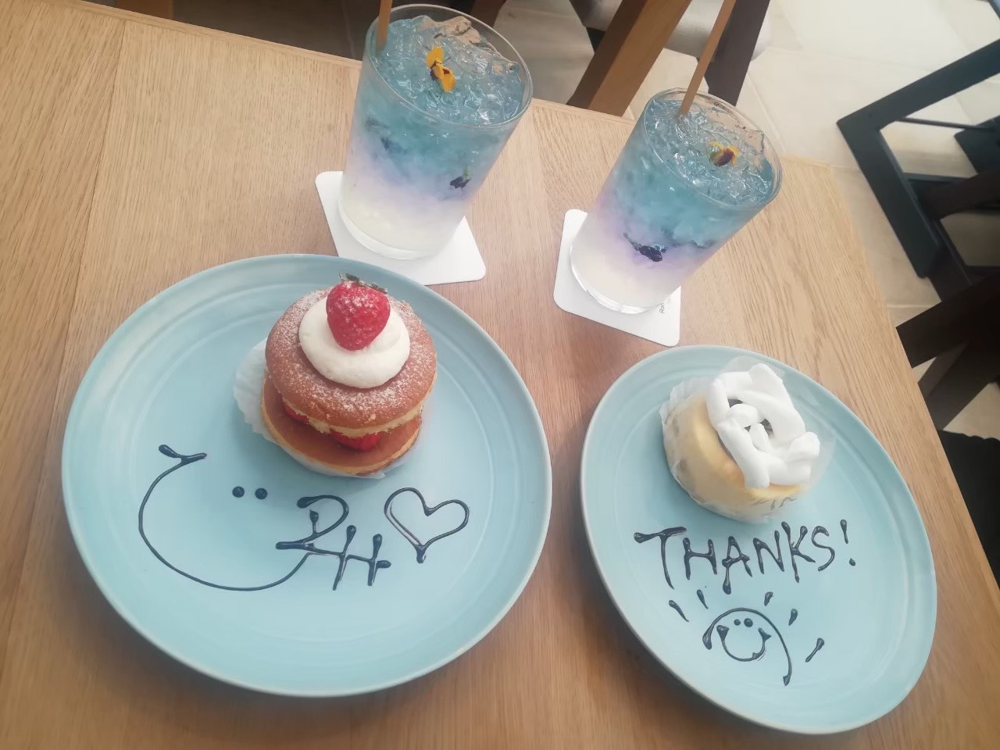

café
ショコラリパブリック
1階テイクアウト
11:00〜22:00
2階カフェ
12:00〜21:00
B階Fカフェ
12:00〜18:00
Access
神戸市中央区加納町4-8-7
にて
078-321-3666
異人館へと続く北野坂に2002年本店としてオープンした三宮本店。
1Fはテイクアウト、B1、2F、3Fはカフェ。
可愛らしいスイーツプレートが女性に人気。女子会やデートにもおすすめです。
公式サイト
Cafe de Agenda (カフェ デ アゲンダ)
平日
12：00~18：00
土日祝日
11：00~18：00
※当面は時短営業
※ディナー営業は只今中止中
Access
神戸市中央区栄町通3丁目2-8 松尾ビル2階
にて
078-325-1025
オープン時から行列を作るほどの人気店。フォトジェニックなスイーツが話題になっている
ひとつひとつ丁寧に作られている為、見た目だけでなく味でも楽しませてくれる
一度は必ず訪れるべきお店です
公式サイト
Ron Herman Cafe (ロンハーマン カフェ)
- 
営業時間
11：00~20：00
(神戸BAL営業時間に準ずる)
Access
神戸市中央区三宮町３丁目6-1
神戸BAL ANNEXにて
078-333-6836
スペシャリティストア『Ron Herman』がプロデュースするカフェ。
開放的でリラックスできる心地良い空間で、
新鮮な旬な食材が味わえる。
ケーキのお皿には素敵なメッセージを書いてくれる。お店選びに迷ったらここに行くべき。
公式サイト
TOOTH TOOTH 凸凹茶房
※博物館設備工事の為
2022年2月4日まで長期休館中
Access
神戸市中央区京町24
神戸市立博物館内1Fにて
078-515-6462
神戸の有名スイーツ店「TOOTH TOOTH」が新たな”日本のティーサロン”を表現
洋を凸、和を凹にみたて、 洋食・洋菓子と日本古来より親しまれる茶や素材を
ミックスさせたメニューが勢揃い。
今までのTOOTH TOOTHとはひと味違う雰囲気を是非堪能してください。
公式サイト
Charmant Cafe (シャルマン カフェ)

営業時間
11：00~21：00
※クレフィ三宮の営業時間に準ずる
Access
神戸市中央区三宮町1丁目4-3
クレフィ三宮 6階
078-321-0808